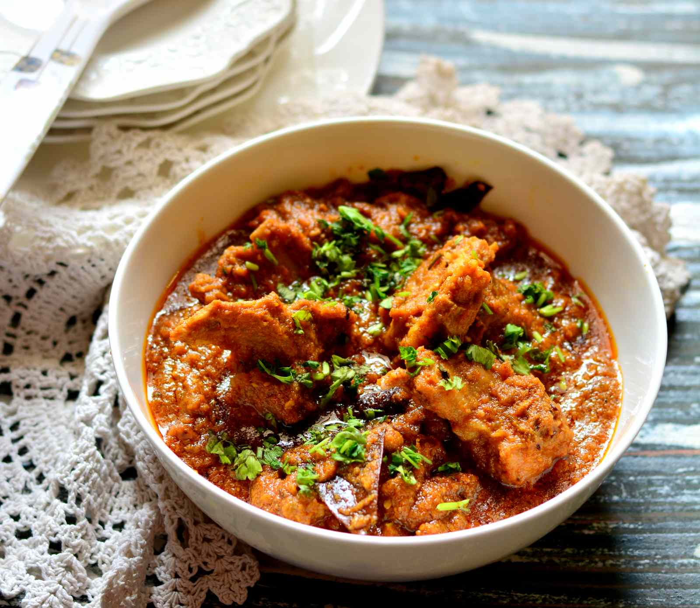

Mutton Rogan Josh

Ingredients
- ½ cup Mustard oil
- 3-4 Cloves
- 1-2 Green cardamom
- 500 gm mutton
- ¾ cup curd
- A few strands of saffron
- 1 tsp Dried ginger powder
- ½ tsp Fennel powder
- ¼ tsp Asafoetida
- 1 ½ tbsp kashmiri Red chilli powder
- ¼ cup Mutton stock
- Salt to taste
- 1-2 Ratanjot
- ½ cup ghee
Steps
- Heat a saucepan, add mustard oil, cloves, green cardamom, mutton and saute well.
- In a bowl, add curd, saffron strands, dried ginger powder, fennel powder, asafoetida, kashmiri red chilli powder and mix well, transfer it into a saucepan.
- Add salt to taste and let it cook. Add little mutton stock mix well and cover it with the lid.
- Cook till the meat is tender.
- In a pan, add ghee, ratanjot once it leaves the colour, strain the mixture and transfer it into the saucepan and mix well.
- Serve hot with naan.